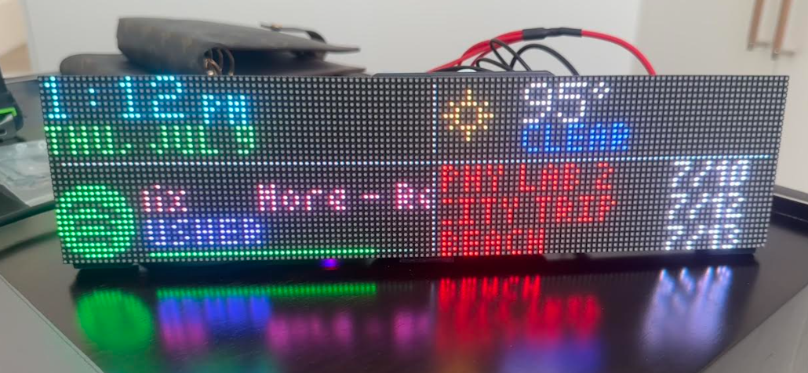
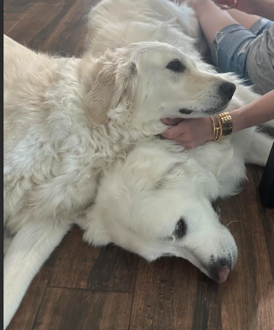

I'm an Electrical & Computer Engineering student at UT Austin interested in embedded systems, integrated circuits, and computer architecture. I enjoy building projects that combine custom hardware with low-level software.

Embedded systems projects spanning hardware, firmware, and PCB design.
A Wi-Fi connected 128×32 RGB desk dashboard displaying Spotify, weather, stocks, tasks, and more in real time.
A fully playable Donkey Kong clone running bare-metal at 80 MHz MSPM0+. Built as the final project for ECE 319K.
Two custom boards designed in KiCad and fabricated via JLCPCB — click through for the build stories.
Researched exploratory waste management opportunities for Class I injection wells, explored avenues to leverage Anthropic to make python scripts to automate QGIS mapping and dense dataset analysis.
Designed and simulated PODIUM exercise-device components in Creo CAD for the ISS PODIUM strength-training system used in microgravity research.
High school valedictorian.
Bringing up my first custom PCB — fresh from JLCPCB, validation in progress · exploring Verilog & FPGAs as the next step toward computer architecture
Outside of engineering, you'll usually find me following baseball statistics (yes, I'll explain why your favorite hitter is overrated), playing water polo (I captained my high school's varsity team), or trying to keep my unreasonable Settlers of Catan win rate alive.
Quality assurance on all hardware projects is handled by the two english golden retrievers pictured here. They have yet to approve a first revision.
